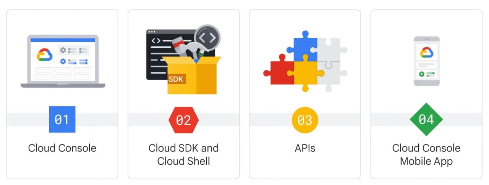
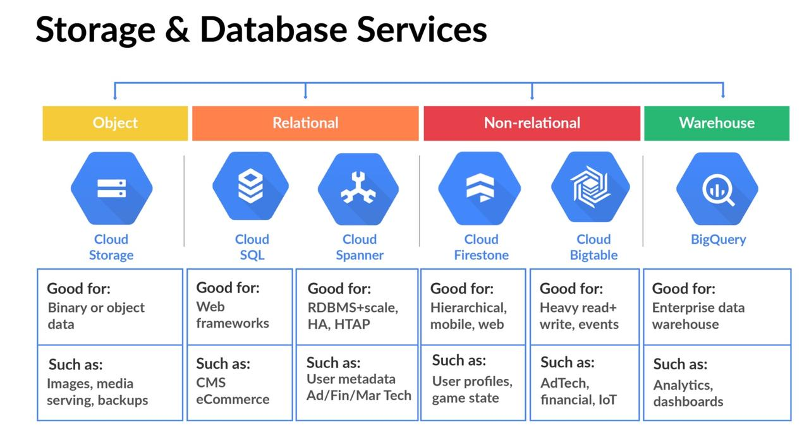
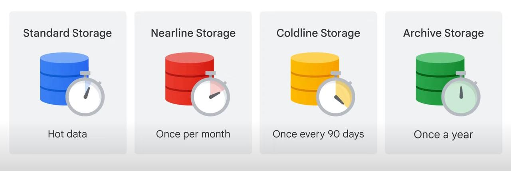

An introduction to Google Cloud Platform - part 1
Basics - logging in and getting set up.¶
About GCP¶
Resource hierarchy in Google Cloud¶

At the bottom of the stack are Resources which are storage buckets, databases, scripts. These are organized into Projects. One or more projects can be in a folder or sub-folders, which themselves are organized under an Org node. Access, budgeting policies are defined at Org or folder level and sometimes at granular levels such as projects and resources. Policies are inherited downward.
GCP “Project”¶
A Google Cloud project is an organizing entity for your Google Cloud resources. Each resources can belong to just 1 project. Projects also contain settings and permissions, which specify security rules and who has access to what resources. Orgs can allocate budgets to projects and set spending alerts so they don’t accidentally run up a large GCP bill.
Each project has 3 identifying entities:
- Project ID: a unique identifier that is used to link Google Cloud resources and APIs to your specific project. Project IDs are unique across Google Cloud. Project IDs are created by GCP and once created, they are immutable.
- Project Name: a label created by user. Not unique, can be edited later
- Project Number: globally unique, created by GCP and cannot be altered by user.
IAM¶
For smaller orgs, it is sufficient to just manage access via settings on Folders and Projects. However, when companies need to manage access in a sophisticated and granular manner, they can use IAM - Identity and Access Management. An IAM consists of a bunch of Who has access to What. The Who can be a google account, google group, service account or a cloud identity domain and the What part is defined by a Role which is a collection of permissions.
There are 3 types of Roles:
- basic: Owner, Editor, Viewer, Billing Admin. These are broad by design.
- predefined: More nuanced such as Instance Admin, VM Admin etc.
- custom IAM: go crazy, go as narrow as you want.
A special type of account is the Service Account which is tuned for all kinds of automation scenarios. Unlike regular accounts, this uses a cryptographic key instead of a password. Service accounts are also considered resources (not user accounts) and so can be tightly managed using policies.
Ways of accessing GCP¶

You can access GCP via 4 ways:
- Web interface: GUI. Allows you to check health, manage, set budgets. Can also connect to instances via SSH
-
Cloud SDK & Cloud shell: SDK has
gcloudmain CLI tool,gsutilCLI for storage,bqCLI for big query. SDK is installed on your workstation. Cloud Shell is a CLI running on the cloud and accessed via browser. Is Debian based with5GB persistent storage and loaded with SDK. - GCP API: Web and client libraries in different languages - Java, Python, C#, node, Ruby, C++ etc.
- Cloud console mobile app: certain management, start-stop operations, view budgets, view server status etc, incident management.
Networking on GCP¶
Each project in GCP has a default VPC (virtual private cloud) configured. The resources within a project can talk to each other via this internal IP Address. By default, the firewall is configured to block all incoming traffic, but allow all out-going traffic from within a project.
Storage on GCP¶
There are multiple storage services on GCP - depending on the type of data being stored and the application that is intended. Below is a list of 5 types of services:

For Cloud Storage, there are multiple classes of storage, depending on how often you access the data as shown below:

No matter which class you use, all types allow for global access, no minimum amount, pay as you go rates. Data is always encrypted at rest.
Cloud SQL provides fully managed RDBMS including mysql, postgresql, sql server. You can scale up to 64 cores, 400 GB of RAM and 30 TB of storage.
Cloud spanner is also a fully managed RDBMS, but for high throughput SQL operations including joins, reads, writes. It sounds like you would start with Cloud SQL and upgrade to spanner if your needs warrant that.
Firestore - scalable, NoSQL DB where data is stored in documents and stored in collections. Firestore is suitable for web or mobile apps (in addition to other users), allows for offline replication & sync. Cost is fine grained, per read, write, query ops and the amount of data stored.
Cloud Bigtable - NoSQL, big data DB. Bigtable is suitable when data is high throughput, exceeds 1TB, either structured or unstructured, supports time-series. Frequently customers that run ML jobs on data use bigtable.
7 main categories of services¶
There are seven categories of Google Cloud services:
- Compute: A variety of machine types that support any type of workload. The different computing options let you decide how much control you want over operational details and infrastructure.
- Storage: Data storage and database options for structured or unstructured, relational or non relational data.
- Networking: Services that balance application traffic and provision security rules.
- Cloud Operations: A suite of cross-cloud logging, monitoring, trace, and other service reliability tools.
- Tools: Services that help developers manage deployments and application build pipelines.
- Big Data: Services that allow you to process and analyze large datasets.
- Artificial Intelligence: A suite of APIs that run specific artificial intelligence and machine learning tasks on Google Cloud.
Here is a cheetsheat containing all GCP services.